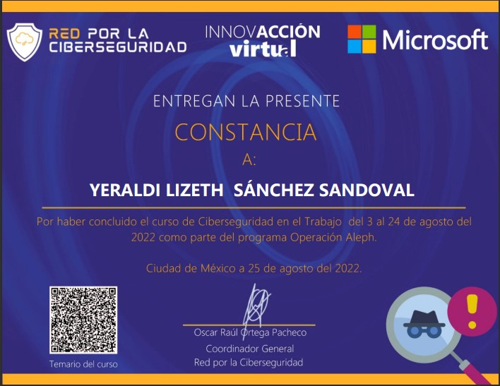
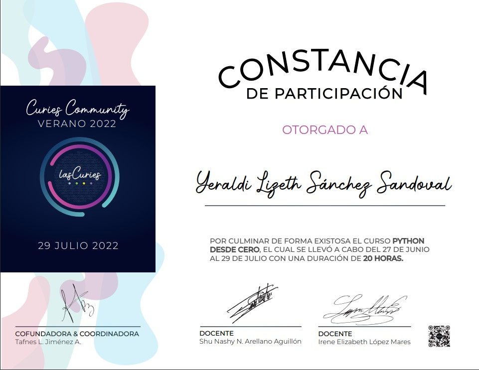
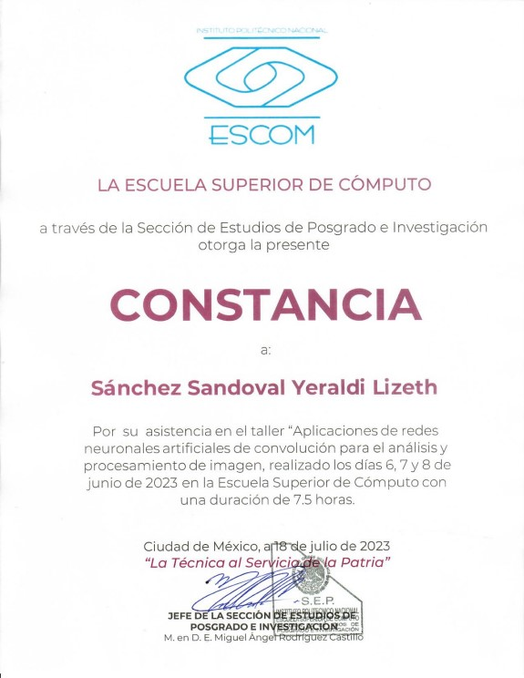

Conóceme
Mi nombre es Lizeth Sánchez y actualmente estoy en mi último semestre de la Universidad. Estoy estudiando Ingeniería en Sistemas Computacionales en el Instituto Politécnico Nacional. Desde joven me ha llamado bastante la atención el área tecnológica.
Habilidades técnicas
Al estudiar ingeniería en sistemas computacionales he adquirido diversoso conocimientos y habilidades tanto en la programación como en la gestión de proyectos. Tengo experiencia en desarrollo web haciendo uso de HTML y CSS, además de trabajar con Python haciendo uso de librerías enfocadas a la visión por computadora y aprendizaje profundo. Además de trabajar con frameworks relacionados con la gestión de proyectos y la gobernanza de las tecnologías de la información como Project Management Body of Knowledge (PMBOK) y Control Objectives for Information and Related Technologies (COBIT 2019).
Cursos y talleres

Ciberseguridad en el trabajo

Python desde cero
